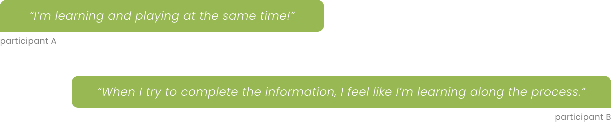

Overview
Plant Discovery is a website that provides an interactive learning experience to help users explore botanical information about endangered plants in Australia, with a visual-centered approach to boost users' motivation to learn.
Disclaimer: The project is a conceptual initiative that explores the potential of public datasets without claiming ownership of any data used.
ROLE
User Research, Visual Design, Interaction Design, Programming
DURATION
3 months (2023)
TOOLS
Figma, Procreate, Visual Studio Code
Background
Australia's distinctive location on the planet has resulted in a rich diversity of plant species. Unfortunately, many of these species are currently endangered. The traditional information sources about these plants can be overwhelming, as they often rely on lengthy texts. Therefore, the project aims to increase awareness about these plants through a visual-centered learning experience.
Track KPIs
Learnability
80% of users can understand the description of 5 different plants
Usability
85% of users can identify 3 specific plants
Retention
70% of old users will return to website when they in need
Research
Secondary research and interview were carried in the initial stage of the project to identify the potential design opportunity.
What had we learned ?
・Images serve as crucial visual aids within a website
・Traditional information sources rely heavily on text and
lack of interaction for users
・Interviewees expressed interest
in learning botanical knowledge through visual methods
Persona
University students aged 18 to 24 who seek a deeper understanding of Australia's endangered plants.
Task flow
Traditional information platforms offer user an easy access to obtain knowledge yet lack interaction which often be considered less fun.

Ideation
In the ideation phase, I used the prioritization matrix to identify key features that need to be included to ensure the product's success.
Low-Fidelity Prototype
Challenges
Images Creation
Corresponding with the initial concept, the project's main feature that differentiates it from existing websites is presenting the plant's life cycle. However, the team could not find suitable images that made the website fully functioning as the original idea. Since the website focuses on endangered Australian plants, online resources only contain a few snippets of these distinctive species. However, the team opted to keep the key feature and instead created illustrations to represent each plant.
Missing data
Upon the implementation, our team encountered challenges with the chosen datasets. Specifically, some data were found to be incomplete and limited in terms of information. As a result, our team concluded that these datasets were unlikely to yield considerable benefits to users.
Our team first reexamined the three datasets to address the issue at hand. The team carefully selected only the pertinent data to include and build up the botanical features. Furthermore, we crafted a more elaborate and comprehensive introduction, which was not included in the chosen datasets. Our aim was to create a concise profile for every plant accompanied by the original datasets.
Insufficient Interaction with Data
Upon finishing the initial phase of the final project, which involved creating a minimum viable product, our team realized that certain features had been eliminated, leading to a subpar level of engagement. In order to tackle this issue, we decided to gather suggestions from our target audiences. Through conducting brief interviews with potential users, we were able to integrate the concept of flashcards, thereby enhancing the overall interactive learning experience.
Testing and Iteration
Three tasks
・Locating the plant Goebelobryum grossitextum on the plant gallery
page
・Finding the plant 'Baileyoxylon' and read its plant description
・Observing the growth process of the plant 'Baileyoxylon' through
interactive means
Visual Design
Color Pallate
Result
The final testing results indicated a positive outcome of the project, with 96% of participants being able to navigate the website easily and fully understand the function of each feature. The UI of the project served as an encouraging response at the trade show, which reinforces the user-friendly nature of the website. During the follow-up interview, participants suggested the refined function, the drag-and-drop section, can assist their learning process, which aligns with the project's goal of enhancing the user's learning experience.
